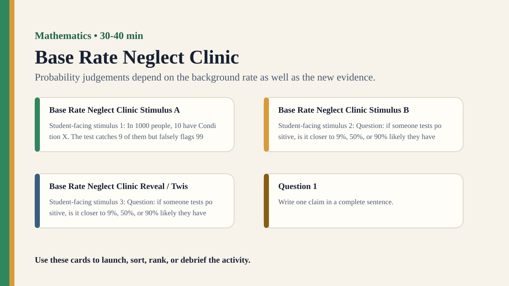

Premium draft resource
Base Rate Neglect Clinic Classroom Run Kit
Students diagnose why a vivid test result can mislead when the underlying base rate is ignored.
Back to Base Rate Neglect Clinic
One-Minute Teacher Brief
Students diagnose why a vivid test result can mislead when the underlying base rate is ignored.
Big idea: Probability judgements depend on the background rate as well as the new evidence.
Student Prompt
Inspect Base Rate Neglect Clinic Stimulus A. Record one first claim, the evidence you used, your confidence, and what would make you revise.
Concrete Stimulus Packet
Stimulus
Base Rate Neglect Clinic Stimulus A
Student-facing stimulus 1: In 1000 people, 10 have Condition X. The test catches 9 of them but falsely flags 99 people without it. Work the example, then decide whether it gives a pattern, a model, a calculation, or a proof.
Students inspect this exact card first and commit to a claim before hearing anyone else.Stimulus
Base Rate Neglect Clinic Stimulus B
Student-facing stimulus 2: Question: if someone tests positive, is it closer to 9%, 50%, or 90% likely they have Condition X?. Work the example, then decide whether it gives a pattern, a model, a calculation, or a proof.
Use this for comparison, a second round, or a partner challenge.Stimulus
Base Rate Neglect Clinic Reveal / Twist
Student-facing stimulus 3: Question: if someone tests positive, is it closer to 9%, 50%, or 90% likely they have Condition X?. Work the example, then decide whether it gives a pattern, a model, a calculation, or a proof.
Teacher reveal: connect the changed response to the big idea — Probability judgements depend on the background rate as well as the new evidence.Actual Lesson Questions
| # | Question for students | Teacher key / cue |
|---|---|---|
| 1 | After inspecting Base Rate Neglect Clinic Stimulus A, what is your first knowledge claim? | Teacher cue: look for a clear claim, not just a description. |
| 2 | Which exact detail from Base Rate Neglect Clinic Stimulus A did you use as evidence? | Teacher cue: students should name visible words, data, source features, method features, or contextual clues. |
| 3 | What did you infer beyond the evidence? | Teacher cue: this is where assumptions, framing, models, or perspective usually appear. |
| 4 | How confident are you: 50%, 60%, 70%, 80%, 90%, or 100%? | Teacher cue: confidence is data for the debrief, not a grade. |
| 5 | What missing information would most improve the knowledge claim? | Teacher cue: push for method, source, context, comparison, or definitions. |
| 6 | How does representation affect mathematical knowledge? | Teacher cue: students should move from the classroom example to a general TOK issue. |
Student Task
Use the stimulus cards to complete the observation/inference/evidence/confidence grid, then answer one TOK knowledge question connected to Mathematics.
Teacher Key / Reveal
The key move is not the “right answer”; it is the moment students see how probability judgements depend on the background rate as well as the new evidence.
- Strong response: separates observation from inference.
- Strong response: names a method, source, model, language choice, context, or perspective.
- Strong response: revises confidence when new evidence or a new criterion appears.
- Weak response: gives only opinion or says “it depends” without criteria.
Classroom materials
Printable Pack and Cards
Open the classroom resource pack for stimulus cards, CSV card deck, and the activity visual prompt.
Visual Prompt

Setup Checklist
- Use natural frequencies rather than formulas at first.
- Keep the scenario fictional and low-stakes while preserving the structure of diagnostic reasoning.
Ready-to-Use Examples
- In 1000 people, 10 have Condition X. The test catches 9 of them but falsely flags 99 people without it.
- Question: if someone tests positive, is it closer to 9%, 50%, or 90% likely they have Condition X?
Run Resources
- Thousand-person grid or token set with true positives and false positives in different colors.
- Risk communication card: percentage version, frequency version, and visual-grid version.
Teacher Language
- The test sounds accurate, but we need to ask: accurate among how many real cases?
- The denominator is doing quiet but essential knowledge work.
Sample Student Output
- I focused on test accuracy and ignored how rare the condition was.
- The grid made the false positives visible in a way the percentage did not.
Procedure
- Present a fictional condition with a low base rate and a fairly accurate test.
- Ask students to estimate the chance someone has the condition after a positive result.
- Build the scenario with a 1000-person or 100-person frequency table.
- Compare intuitive estimates with the frequency result.
- Debrief why base rates are easy to neglect.
Debrief Questions
- Knowledge question: Why can mathematically correct evidence still mislead intuitive knowers?
- When should probability be communicated as percentages and when as natural frequencies?
- How does format affect mathematical understanding?
Adaptations
- Support: use 100 people and round numbers.
- Challenge: ask students to calculate a second scenario with a higher base rate.
Extension Tasks
- Students rewrite a risk claim in three formats and evaluate which is most responsible.
- Compare this with legal evidence, medical testing, and spam filtering.